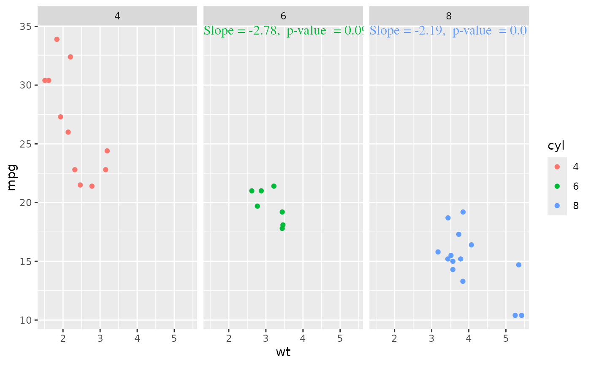

stat_gof
stat_gof.Rdstat_gof
stat_gof(
mapping = NULL,
data = NULL,
geom = GeomRichTextNpc,
position = "identity",
na.rm = FALSE,
show.legend = NA,
show.bias = TRUE,
label.format = fmt_gof,
x = 0.05,
y = 0.95,
inherit.aes = TRUE,
...
)
geom_gof(
mapping = NULL,
data = NULL,
stat = StatGOF,
position = "identity",
...,
show.bias = TRUE,
label.format = fmt_gof,
x = 0,
y = 1,
hjust = 0,
vjust = 1,
size = 5,
na.rm = FALSE,
show.legend = NA,
inherit.aes = TRUE
)
stat_reg(
mapping = NULL,
data = NULL,
formula = y ~ x,
digits = 2,
units = "",
format = paste0("Slope = {str_num(slope, digits)}{unit}",
", p-value = {str_num(pvalue, digits)}"),
fun_slope = NULL,
x = 0,
y = 1,
hjust = 0,
vjust = 1,
mar = 0.03,
height.factor = 1.2,
family = "Times",
color = NULL,
position = "dodge",
...
)Arguments
- mapping
Set of aesthetic mappings created by
aes()oraes_(). If specified andinherit.aes = TRUE(the default), it is combined with the default mapping at the top level of the plot. You must supplymappingif there is no plot mapping.- data
The data to be displayed in this layer. There are three options:
If
NULL, the default, the data is inherited from the plot data as specified in the call toggplot().A
data.frame, or other object, will override the plot data. All objects will be fortified to produce a data frame. Seefortify()for which variables will be created.A
functionwill be called with a single argument, the plot data. The return value must be adata.frame, and will be used as the layer data. Afunctioncan be created from aformula(e.g.~ head(.x, 10)).- position
"dodge" or "identity"
- na.rm
If
FALSE, the default, missing values are removed with a warning. IfTRUE, missing values are silently removed.- show.legend
logical. Should this layer be included in the legends?
NA, the default, includes if any aesthetics are mapped.FALSEnever includes, andTRUEalways includes. It can also be a named logical vector to finely select the aesthetics to display.- inherit.aes
If
FALSE, overrides the default aesthetics, rather than combining with them. This is most useful for helper functions that define both data and aesthetics and shouldn't inherit behaviour from the default plot specification, e.g.borders().- ...
Other arguments passed on to
layer(). These are often aesthetics, used to set an aesthetic to a fixed value, likecolour = "red"orsize = 3. They may also be parameters to the paired geom/stat.- stat
The statistical transformation to use on the data for this layer, as a string.
- formula
an object of class
"formula"(or one that can be coerced to that class): a symbolic description of the model to be fitted. The details of model specification are given under ‘Details’.- digits
the number of significant digits to be passed to
format(coef(x), .)whenprint()ing.
Value
No return. This function is used to calculate data for gglot2 geom_*,
just like ggplot2::stat_smooth().
Details
b: the object returned bybroom::tidy()s: the object returned bybroom::glance()"R^2 = str_num(s$r.squared, digits)"
slope:pvalue:pcode: significant code, e.g.,**,*,-
Examples
library(ggplot2)
library(data.table)
#>
#> Attaching package: ‘data.table’
#> The following objects are masked from ‘package:dplyr’:
#>
#> between, first, last
dat <- data.table(mtcars)
dat$cyl <- as.factor(dat$cyl)
table(dat$cyl)
#>
#> 4 6 8
#> 11 7 14
ggplot(dat, aes(wt, mpg, color = cyl)) +
geom_point() +
stat_reg(data = dat[cyl != 4], y = 1, mar = 0, position = "none") +
facet_wrap(~cyl)

ggplot(dat, aes(wt, mpg, color = cyl)) +
geom_point() +
stat_reg(data = dat[cyl != 4], y = 1,
position = "dodge",
height.factor = 1.2,
unit = "gC m^-2 d^-1")
 ggplot(dat, aes(wt, mpg, color = cyl)) +
geom_point() +
stat_reg(data = dat[cyl != 4], y = 1,
position = "none",
height.factor = 1.2,
unit = "gC m^-2 d^-1") +
facet_wrap(~cyl)
ggplot(dat, aes(wt, mpg, color = cyl)) +
geom_point() +
stat_reg(data = dat[cyl != 4], y = 1,
position = "none",
height.factor = 1.2,
unit = "gC m^-2 d^-1") +
facet_wrap(~cyl)
 ggplot(dat, aes(wt, mpg, color = cyl)) +
geom_point() +
stat_gof(x = 0, y = 1) +
# stat_reg(data = subset(dat, cyl == 4), y = 1, color = "red") +
# stat_reg(data = subset(dat, cyl == 6), y = 0.8) +
facet_wrap(~cyl)
ggplot(dat, aes(wt, mpg, color = cyl)) +
geom_point() +
stat_gof(x = 0, y = 1) +
# stat_reg(data = subset(dat, cyl == 4), y = 1, color = "red") +
# stat_reg(data = subset(dat, cyl == 6), y = 0.8) +
facet_wrap(~cyl)